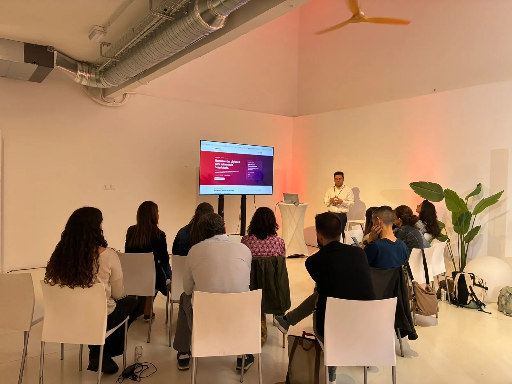

Introducción práctica a Claude y caso guiado.
Para el recuerdo
Así fue la sesión del 3 de octubre

Tu sesión
Elige el pase que te corresponde
El taller se imparte dos veces el sábado con el mismo contenido. Basta con acudir al horario asignado por la organización.
El mismo taller para el segundo grupo.
Lugar: Espacio BLOKE, calle de Cedaceros 11, Madrid. Confirma tu grupo y acceso con la organización del evento.
Antes de llegar
Tres cosas y estarás preparado
Accede a Claude
Entra en claude.ai e inicia sesión. Comprueba que puedes crear una conversación nueva.
Trae un equipo
Ven con tu portátil y un navegador actualizado si quieres hacer la práctica. Podrás seguir la demostración aunque alguna función no aparezca en tu cuenta.
Guarda el material
Descarga el CSV ficticio. La skill es un recurso complementario para explorar después o durante la demostración.
Durante el taller · 75 minutos
De una idea a una herramienta que puedas comprobar
Siete conceptos, una misma historia: describir una necesidad de farmacia hospitalaria, construir un prototipo con Claude y verificarlo. Los dos pases siguen esta misma ruta; los tiempos son orientativos.
- 5 min01 · Vibe codingCrear herramientas propias describiendo lo que necesitas.
- 12 min02 · El promptDar contexto, tarea, formato, límites y criterio de aceptación.
- 8 min03 · SkillsReutilizar un procedimiento revisable.
- 7 min04 · ProyectosOrganizar instrucciones y fuentes de un área.
- 27 min05 · ArtefactoCrear y probar un dashboard de PDC con datos simulados.
- 8 min06 · Plugin y MCPEntender cómo se amplían las capacidades y los permisos.
- 8 min07 · GitHubGuardar una versión y conocer la ruta de publicación.
La práctica central es el artefacto. Plugins, MCP y GitHub se presentan como demostración y ruta para continuar; su configuración depende de la cuenta y de los permisos disponibles.
Guía de la sesión
Los siete pasos, con ejemplos de consulta externa
01 · 5 min
Vibe coding: crear describiendo
Qué es, en una frase
Crear pequeñas herramientas propias describiendo con tus palabras lo que necesitas. Claude escribe el código, y tú decides si el resultado es correcto, porque el criterio clínico sigue siendo tuyo.
En tu consulta conviven muchos pequeños problemas que ningún programa del hospital resuelve, porque son demasiado específicos o demasiado pequeños para que alguien los desarrolle. El vibe coding te permite resolverlos tú: la parte difícil (saber qué hace falta y si el resultado es correcto) ya la tienes; el código ahora lo pone la IA.
Para qué te sirve en la consulta de VIH
Material para el paciente
- Un plan de toma visual e imprimible para quien inicia o cambia de TAR: horario, relación con las comidas y qué hacer si olvida una dosis.
- Una explicación interactiva de un cambio de tratamiento: qué cambia, qué se mantiene y qué vigilar.
- Una hoja de «antes de tomar algo nuevo, consúltanos», adaptada a cada paciente.
Apoyo a tu entrevista
- Una lista estructurada de la visita (adherencia, medicación nueva, productos de herbolario, efectos adversos) que te genera un texto ordenado para copiar a la historia.
- Un guion de entrevista motivacional con las preguntas que tú usas.
Tareas repetitivas
- Un calculador de fechas de próxima visita o dispensación según tu circuito.
- Una plantilla de informe farmacoterapéutico que completas con campos y te devuelve el texto redactado.
Docencia e investigación
- Casos clínicos simulados interactivos para residentes o alumnos.
- El prototipo de un cuestionario o cuaderno de recogida de datos, para probarlo antes de montarlo «de verdad».
- La prueba de concepto de un modelo de estratificación, para ver si la lógica funciona antes de pedir recursos.
Para qué NO
- Sustituir sistemas validados del hospital (prescripción, historia clínica, dispensación).
- Almacenar o tratar datos reales de pacientes.
- Tomar decisiones clínicas de forma automática. Si la herramienta orienta decisiones sobre pacientes concretos, entra en terreno de validación y posiblemente de regulación como producto sanitario.
- Rehacer lo que ya existe y está bien mantenido, como los comprobadores de interacciones de referencia.
¿Merece la pena? Cuatro preguntas antes de empezar
- ¿Lo hago a menudo? Si es una vez al año, no compensa.
- ¿No existe ya algo que lo haga bien? Busca antes de construir.
- ¿Puedo comprobar si el resultado es correcto? Si no sabes cómo verificarlo, no lo uses.
- ¿Funciona sin datos identificables de pacientes? Si la respuesta es no, replantéalo.
Si respondes «sí» a las cuatro, es un buen candidato.
Ejemplo guiado: plan de toma para un paciente que inicia TAR
Este ejemplo enseña la regla más importante: tú aportas el contenido clínico, Claude aporta la forma.
Prompt de ejemplo
Quiero una herramienta web sencilla para generar planes de toma imprimibles para pacientes que inician tratamiento antirretroviral. Yo introduciré: el nombre comercial del fármaco, el número de comprimidos, la hora de toma, si debe tomarse con comida o no y una instrucción para olvidos. No inventes ninguna de estas indicaciones: usa solo lo que yo escriba. Salida: una página en lenguaje sencillo, con letra grande, iconos de sol/luna y comida, y lista para imprimir en A4. Sin nombre del paciente ni otros datos identificables. Antes de escribir código, resúmeme lo que has entendido y dime qué dudas tienes.
Fíjate en «no inventes ninguna de estas indicaciones». Sin esa frase, Claude rellenaría las recomendaciones por su cuenta, y podrían ser incorrectas o no coincidir con las de tu servicio.
Hazlo ahora: tu propia herramienta
Completa esta plantilla con un problema real de tu consulta:
Plantilla
En mi consulta, cada vez que ___ (situación), tengo que ___ (tarea repetitiva o que hago de memoria). Me ayudaría una herramienta que ___ (qué hace), usando ___ (qué datos, siempre sin identificar al paciente). Sabré que funciona si ___ (cómo lo compruebo).
Pégala en Claude y añade: «Antes de construir nada, hazme las preguntas que necesites».
Siguiente paso: publicar y mantener tus herramientas con GitHub se trabaja en el curso «De una necesidad farmacéutica a una herramienta funcional» (nivel intermedio–avanzado) de la plataforma.
02 · 12 min
El prompt: de pregunta a encargo claro
Un prompt útil especifica rol, contexto, tarea, formato y restricciones. Termina con un criterio de comprobación. Si falta un dato, pide a Claude que pregunte o haga explícita su suposición.
Vago
«Hazme una calculadora de adherencia».
Específico
«Con este CSV ficticio, calcula días cubiertos únicos en 180 días, muestra numerador y porcentaje, y comprueba que el paciente ficticio P02 da 120/180 días (66,7 %)».
Plantilla para cualquier idea
Rol: Actúa como asistente de diseño de una herramienta docente para farmacia hospitalaria. Contexto: Trabajo con [datos ficticios o fuentes públicas] sobre [problema]. Tarea: Crea [resultado concreto] para [persona usuaria]. Formato: Entrega [pantalla, tabla o pasos] e instrucciones de uso. Restricciones: No uses datos reales ni envíes datos a servicios externos. No generes recomendaciones clínicas. Si falta información, pregunta. Comprobación: El resultado debe superar [ejemplo con respuesta conocida] y explicar sus límites.
03 · 8 min
Skills: un procedimiento que puedes reutilizar
Una skill reúne instrucciones y recursos para una tarea repetida. En este caso, el ZIP de valoración farmacéutica muestra cómo ordenar una revisión; no valida una decisión clínica ni sustituye un protocolo institucional.
Observa y prueba
Descarga la skill de ejemplo (.zip). Si tu cuenta permite añadir skills, revisa su contenido antes de incorporarla y pide una valoración de un caso ficticio: datos disponibles, datos pendientes y fuentes que habría que consultar. Si no aparece la función, sigue la demostración.
Practica: diseña tu propia skill
Elige una tarea que repites en tu consulta de VIH y conviértela en un procedimiento que Claude pueda seguir. La skill ordena el trabajo; el criterio clínico sigue siendo tuyo.
- Elige una tarea repetida. Por ejemplo: nota estructurada tras revisar interacciones del TAR con una comedicación nueva (datos disponibles, datos pendientes y fuentes que habría que consultar); mensaje educativo en lenguaje claro tras un cambio de TAR; checklist previo a la visita (última dispensación, analítica pendiente, comedicación nueva); resumen de adherencia por dispensaciones para el equipo médico, como el PDC de la práctica 05; o guion de llamada de telefarmacia antes de un envío domiciliario.
- Reúne tus fuentes, sin datos de pacientes. Plantillas del servicio anonimizadas, procedimientos que puedas compartir y guías públicas. Si usas otra herramienta para extraer patrones de esos documentos, aplica la misma regla: nada identificable.
- Pide a Claude que redacte el SKILL.md con el prompt de abajo. El resultado es un borrador, no una skill validada.
- Revisa antes de instalar. La descripción debe decir qué hace la skill y cuándo usarla, porque de ella depende que Claude la active. Comprueba que hay límites explícitos y que lo que falta aparece como «pendiente de definir» en lugar de inventarse.
- Instala y valida. Guarda el SKILL.md en una carpeta con el nombre de la skill, comprímela en ZIP y súbela desde el apartado de skills de tu cuenta (guía oficial ↗). Prueba con casos ficticios tres peticiones que deberían activarla y dos que no. Si no aparece la opción, puede depender del plan o del administrador de tu cuenta.
Prompt para redactar tu skill
Ayúdame a redactar una skill para Claude (archivo SKILL.md). Tarea repetida: [describe la tarea]. Quién la usa: farmacéutico/a de consulta externa de VIH. Fuentes: [adjunta documentos sin datos de pacientes]. Requisitos: frontmatter con name (minúsculas y guiones) y description (qué hace y cuándo usarla); cuerpo con pasos, formato de salida, un ejemplo con un caso ficticio y límites: no emitir recomendaciones clínicas, separar datos disponibles, datos pendientes y fuentes a consultar, y preguntar si falta información. Usa solo lo que está en mis fuentes; lo que no aparezca, márcalo como "pendiente de definir". Al final, dame 3 peticiones que deberían activar la skill y 2 que no.
Skill no es lo mismo que Proyecto
Pegar el texto de una skill en un proyecto funciona como una instrucción fija de ese proyecto, pero no la instala como skill. Una skill instalada se activa por su descripción en cualquier conversación y puede incluir archivos auxiliares.
Instrucciones verificadas el 1 de octubre de 2026; la interfaz de Claude puede cambiar.
04 · 7 min
Proyectos: contexto compartido entre conversaciones
Un proyecto agrupa instrucciones y documentos de referencia para un área de trabajo. Puedes crear «Docencia VIH» con el objetivo del curso, una guía pública y una regla de respuesta como «separa hechos, supuestos y puntos por verificar». Las conversaciones del proyecto usan ese contexto; no asumas que una conversación recuerda automáticamente otra.
Mini ejercicio
Escribe tres elementos para tu proyecto: objetivo, una fuente pública verificable y una instrucción permanente. Mantén los datos de pacientes y documentos internos fuera de una cuenta personal.
05 · 27 min · práctica central
Artefacto: construir, ejecutar y corregir
Un artefacto es una pieza que Claude puede crear y mostrar para trabajar con ella, como una página o una pequeña herramienta interactiva. Aquí haremos un dashboard docente de PDC. Descarga el CSV, copia el prompt de la práctica, ejecuta el resultado y contrasta P02.
- Construye: adjunta el CSV ficticio y usa el prompt guiado de abajo.
- Comprueba: P02 = 120/180 = 66,7 %; observa numerador, denominador y redondeo.
- Rompe y mejora: prueba un archivo sin una columna y dispensaciones solapadas. Pide un mensaje de error claro y evita contar días dos veces.
06 · 8 min
Plugin y MCP: ampliar capacidades con criterio
Plugin
Paquete de capacidades que puede reunir skills, comandos y conectores para un flujo de trabajo.
MCP
Protocolo técnico para que una aplicación de IA se comunique con herramientas y fuentes externas.
Conector
Acceso concreto a una aplicación o servicio, sujeto a autenticación y permisos.
Regla de oro
Explora el catálogo de Claude sin conectar ninguna cuenta institucional. Antes de instalar o conectar nada, identifica quién lo publica, qué herramientas incluye, qué datos puede consultar y qué acciones permite. La disponibilidad cambia según la cuenta, el entorno y el administrador.
Ejercicio 1 — Un conector a una fuente pública: PubMed
El conector de PubMed trabaja con datos públicos y no requiere conectar ninguna cuenta personal ni institucional. Lo usarás para algo habitual en la consulta: resolver una duda con bibliografía verificable.
- Sin conector. Desactiva la búsqueda web en los dos chats. En un chat nuevo, pregunta:
Pregunta para los dos chats
¿Qué estudios publicados en los últimos 3 años evalúan la adherencia en pacientes con tratamiento antirretroviral inyectable de acción prolongada? Dame el PMID de cada uno.
- Con conector. Activa el conector de PubMed y repite la misma pregunta en otro chat nuevo.
- Verifica. Busca 2 o 3 PMID de cada respuesta en PubMed y comprueba que el título, los autores y el año coinciden.
- Compara:
- ¿Qué respuesta puedes verificar entera?
- ¿Ha aparecido alguna referencia que no existe o que no coincide?
- ¿Qué ha hecho el conector exactamente: buscar, leer resúmenes, leer texto completo?
- Conclusión. Escribe una línea: ¿usarías este conector en tu práctica? ¿Para qué sí y para qué no?
Si el conector de PubMed no aparece en tu cuenta, pasa directamente al Ejercicio 2.
Qué aprendes
- Conector: es un acceso concreto a una fuente, con su propio alcance.
- MCP: es lo que hace posible que Claude consulte PubMed «en vivo» en lugar de responder de memoria.
- Criterio: tener un conector no exime de verificar. Mejora la trazabilidad, no garantiza la interpretación.
Atención
Lo que escribes en tu pregunta se envía como búsqueda a una fuente externa. Nunca incluyas datos de pacientes.
Ejercicio 2 — Ficha de auditoría de un conector (sin conectarlo)
Elige del catálogo un conector que podría tentarte en tu trabajo (correo, calendario, almacenamiento de archivos…) y completa esta ficha sin conectarlo:
| Pregunta | Respuesta |
|---|---|
| ¿Quién lo publica? | |
| ¿Qué herramientas incluye? | |
| ¿Solo lee o también puede escribir, enviar o borrar? | |
| ¿A qué datos accedería en mi caso? | |
| ¿Podría acabar ahí información de pacientes? | |
| ¿Mi hospital permitiría conectarlo? ¿A quién preguntaría? | |
| Decisión: lo conectaría / no / solo con cuenta personal y para… |
Para el grupo: ¿qué conector conectaríais todos sin dudar y cuál ninguno?
07 · 8 min
GitHub: guardar y compartir una versión
El artefacto sirve para prototipar. Si merece continuar, exporta sus archivos y guárdalos en un repositorio: así podrás revisar los cambios, volver a una versión anterior y colaborar. Publicar una web requiere además configurar el alojamiento y comprobar que no hay datos sensibles.
- Descarga o copia los archivos generados por Claude y comprueba que funcionan fuera del chat.
- Crea un repositorio en GitHub, sube los archivos y registra una primera versión (commit).
- Revisa la vista previa y, si es una web estática, configura GitHub Pages desde el repositorio. Cada cambio posterior debe volver a probarse.
Enlazar Claude con GitHub
Si la integración aparece en tu cuenta, añade archivos del repositorio a un chat o a un proyecto de Claude para darle contexto. Esta conexión lee los archivos seleccionados; no publica por sí sola el artefacto ni incorpora automáticamente cambios al repositorio. Revisa los permisos antes de autorizar el acceso.
Ver este repositorio como ejemplo ↗ · Guía oficial de GitHub Pages ↗ · Integración de GitHub con Claude ↗
Material del participante
Descarga lo que usaremos
Son datos y ejemplos docentes. Ningún archivo contiene información de pacientes reales.
CSV para construir y probar la herramienta de adherencia.
Descargar CSV ↗Ejemplo reutilizable para conocer cómo Claude puede seguir un procedimiento. Uso complementario.
Descargar ZIP ↗Ejemplos para el curso
Tres herramientas que veremos en la sesión
Ejemplos propios para mostrar cómo una idea de farmacia hospitalaria puede convertirse en una herramienta web. Puedes abrir la aplicación y consultar su repositorio.
CambiosTAR
Registro de cambios de tratamiento antirretroviral y sus funcionalidades de seguimiento.
CMO VIH
Aplicación de estratificación CMO para organizar la atención farmacéutica en VIH.
MAPEX-ADHEFAR Hub
Plataforma de adherencia desarrollada a partir de la guía MAPEX-ADHEFAR.
La práctica
Un caso ficticio con respuesta conocida
Dashboard de adherencia por días cubiertos
Utiliza el CSV para calcular la proporción de días cubiertos (PDC) entre el 1 de enero y el 29 de junio de 2026, ambos incluidos: 180 días. La herramienta debe mostrar los días cubiertos, el denominador y el porcentaje, sin contar dos veces los solapamientos.
Punto de control: P02 debe tener 120/180 días cubiertos, PDC 66,7 %.
Si el resultado difiere, revisa el cálculo antes de compartir el artefacto. Un diseño atractivo no demuestra que la fórmula sea correcta.
Prompt de partida para Claude
Soy farmacéutico/a de hospital y estoy aprendiendo a crear una herramienta docente. Con el CSV ficticio adjunto, construye un artefacto que calcule el PDC por paciente entre el 01/01/2026 y el 29/06/2026 (180 días, ambos incluidos). Usa días cubiertos únicos, sin duplicar solapamientos y con máximo del 100 %. Muestra numerador, denominador y porcentaje con un decimal. Valida columnas y fechas; explica las filas rechazadas. No envíes datos a servicios externos ni generes recomendaciones clínicas. Comprueba el resultado: P02 debe dar 120/180 días, 66,7 %. Si no coincide, corrige el cálculo y explica qué falló.
Para consultar después
Vocabulario esencial de IA
Una referencia rápida para seguir la conversación sin perder el sentido de cada término.
- IA generativa
- Sistemas que crean texto, imágenes, código u otros contenidos a partir de instrucciones.
- Modelo de lenguaje (LLM)
- Modelo entrenado para procesar y generar lenguaje. Puede responder con seguridad y aun así equivocarse.
- Prompt
- Instrucción que das al modelo: tarea, contexto, formato y límites.
- Contexto
- Información disponible para la respuesta actual: mensajes, instrucciones y archivos accesibles.
- Token
- Unidad de texto que procesa el modelo; condiciona el espacio de contexto y el uso.
- Alucinación
- Respuesta plausible que contiene datos o referencias inventados o erróneos.
- Skill
- Instrucciones reutilizables para un procedimiento específico.
- Proyecto
- Espacio con instrucciones y materiales de referencia de un área de trabajo.
- Artefacto
- Contenido o herramienta que Claude crea y permite visualizar o editar.
- Plugin
- Paquete que reúne capacidades para un tipo de trabajo.
- MCP
- Protocolo para conectar una IA con herramientas o fuentes de información.
- Conector
- Integración concreta con una aplicación, bajo los permisos concedidos.
- Repositorio
- Espacio de GitHub donde se guardan los archivos y su historial de cambios.
- Commit y pull request
- Un commit registra una versión; un pull request propone cambios para revisar antes de incorporarlos.
- Despliegue
- Proceso de poner una versión de la web a disposición de sus visitantes.
- PDC
- Proporción de días cubiertos en un periodo; aquí se calcula con dispensaciones simuladas y reglas explícitas.
Para profundizar: skills, proyectos, plugins y conectores en la documentación de Claude.
Datos ficticios y revisión humana
No introduzcas datos de pacientes reales en una cuenta personal de Claude. Para un uso profesional con datos reales hacen falta un entorno autorizado por tu institución, reglas verificadas y evaluación específica. Este ejercicio produce un prototipo docente.